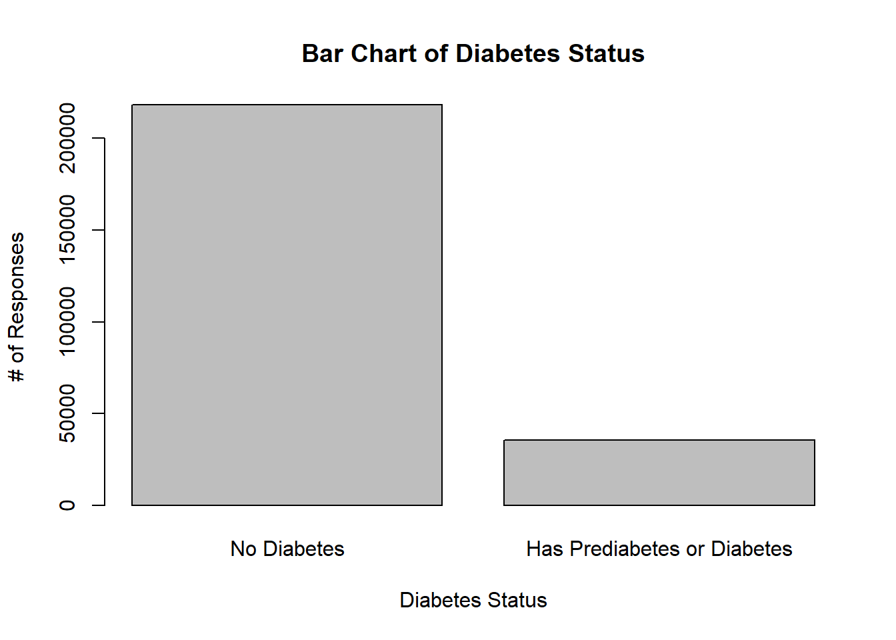
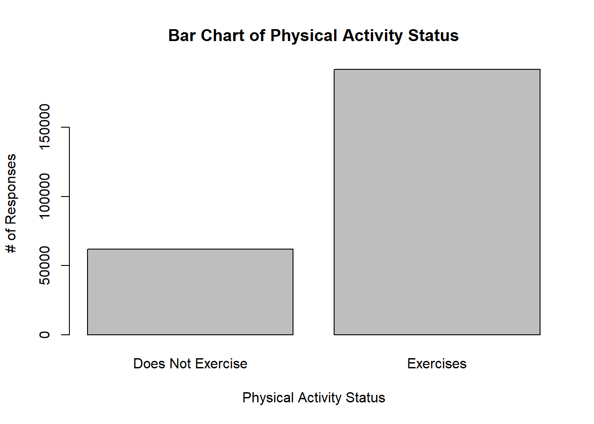
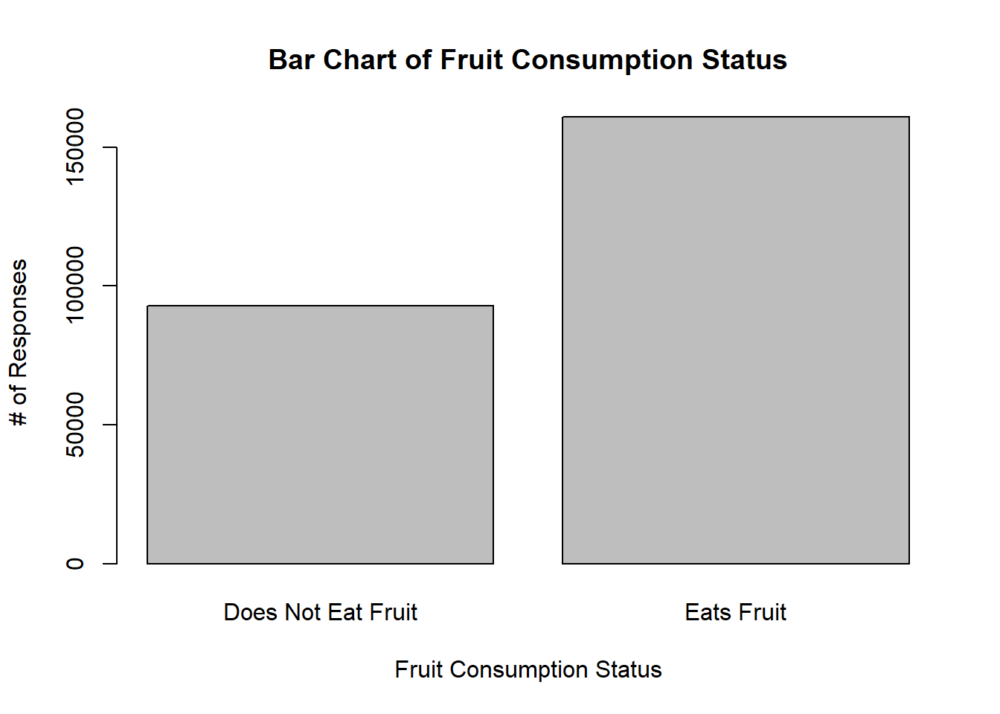
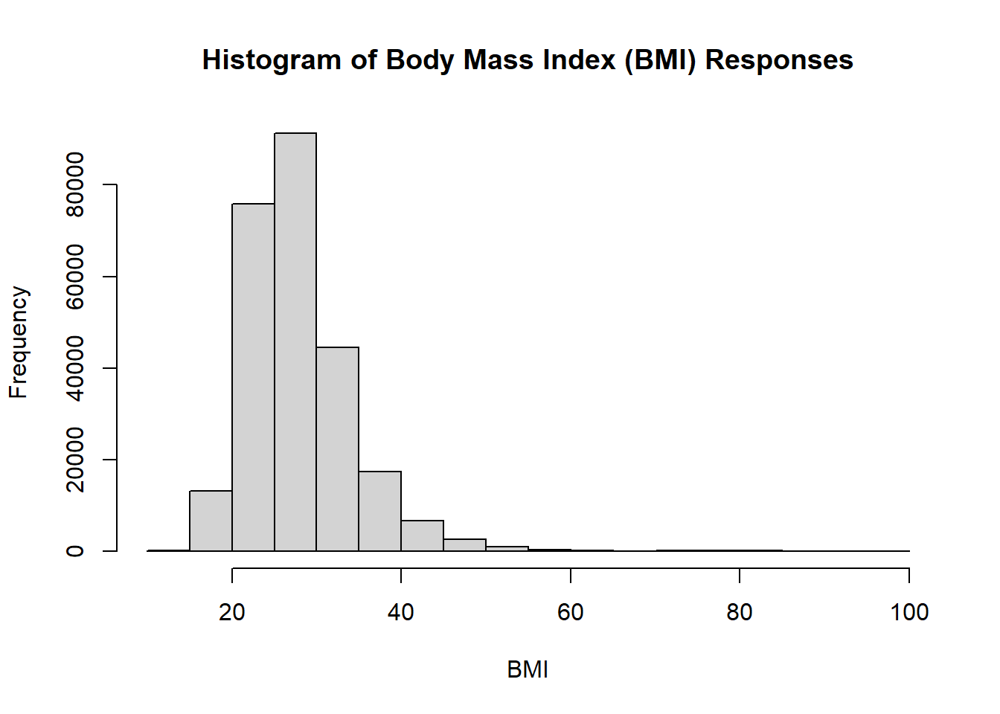
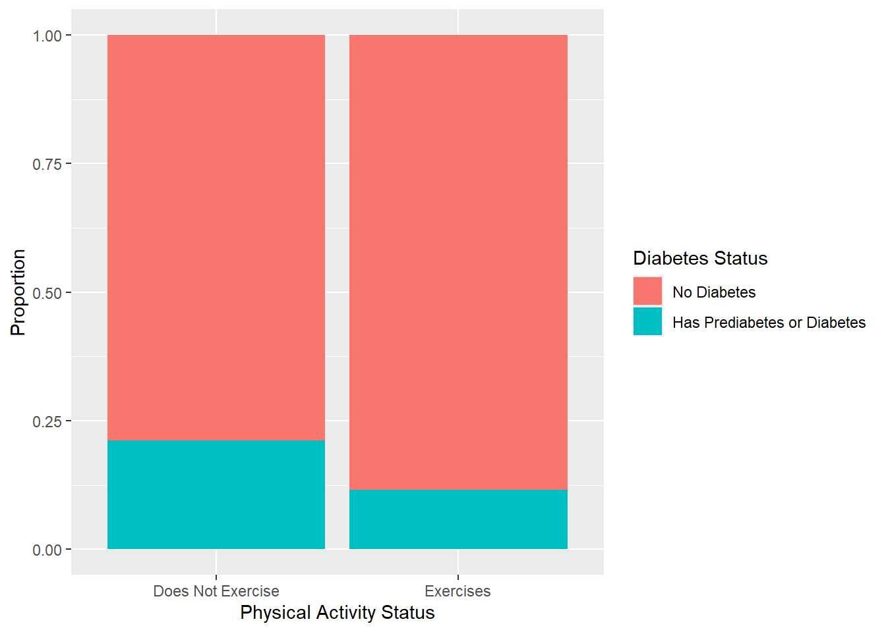
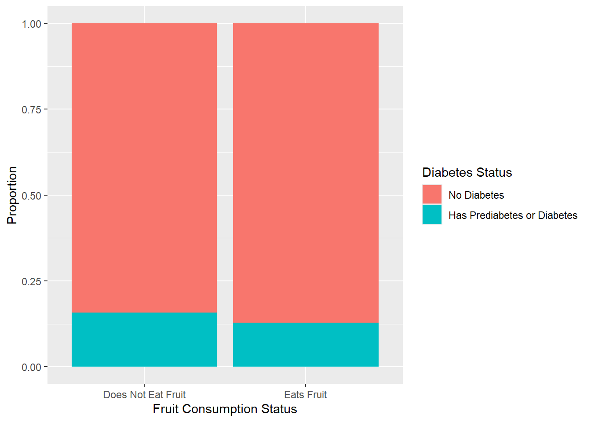
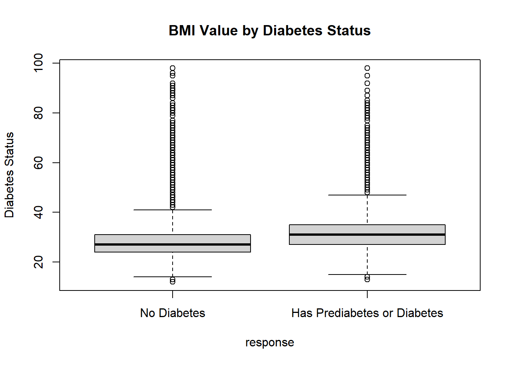

library("dplyr")
library("ggplot2")EDA
Before beginning: adding libraries so our code runs smoothly (messages and warnings silenced).
Introduction Section
Briefly describe the data and the variables you have to work with.
For this project, we are using a specific set of the Diabetes Health Indicators data. The data we are working with is clean data that contains survey responses from the CDC. We are told that the response variable is Diabetes_binary, where 0 means the person does not have diabetes, and 1 means the person has pre-diabetes or diabetes (specifically for this particular data set, we are working with the variable Diabetes_binary which only includes these two classes, rather than having 3 groups for no diabetes, pre-diabetes, and diabetes). The data includes 21 variables total. The project instructions tells us to pick 3 variables (aside from the response) to explore further. I chose to focus on physical activity (0 means no physical activity in the past 30 days, 1 means the person did engage in physical activity in the past 30 days), body mass index (BMI; continuous numeric variable),, and fruits (0 means the person does not consume fruit 1 or more times per day, 1 means the person consumes 1 or more fruits each day).
Now, I will explain a bit about why I chose these three variables to focus on. For the past 3 years, I have worked in a lab at UNC Chapel Hill studying intellectual and developmental disabilities (IDD) in younger and older adults, including autism, dementia, etc. One of the research projects studies the effects of a physical activity program (intervention) for adults with IDD. In our project narrative, we point to past research that suggests that physical activity (moderate to vigorous) can potentially delay the onset of conditions like diabetes and dementia, which are especially prevalent in IDD communities compared to the general population. Some of the measures we include in our study are body mass index and body fat percentage. We place our participants in a machine called the BodPod to investigate body composition, and do this at several time points during the participants’ time in the physical activity intervention (and/or while they are in the waitlist group for the intervention). We also ask the participants (and their caregivers) questions about their lifestyle in general: e.g., what is the participant’s baseline physical activity outside of the intervention? Do they choose to eat fruits and vegetables on their own? How often do they do this? What kind of adaptive behaviors help them complete activities of daily living? So, in summary, though this data set is not IDD-specific, I chose variables I recognized and am familiar with in thinking about factors at play for diseases like diabetes (and dementias). Because of this research I have been a part of for IDD populations, I know that it is possible there may be similar trends for a general population. Physical activity, BMI, and fruit consumption may serve as predictors for the presence of diabetes.
Describe the purpose of your EDA and ultimate goal of modeling. The purposes of exploratory data analysis (EDA) is to better understand and get to know the data set at hand before applying deeper statistical methods (e.g. for the purposes of inference and prediction). EDA can include data cleaning - the current data set is described as clean already on its website, but I still check for missing values (for example) below. If there were missing values, I would drop them from analysis as part of EDA. EDA can also include descriptions and visualizations of the data. The present project prompts us to do both univariate and bivariate data exploration to investigate characteristics of certain variables but also give insight on how variables might relate to each other. Below, the data is visualized with plots as well, which is another part of EDA. Ultimately, EDA is a tool used to understand the structure of data, whether there are certain patterns present, whether or not certain variables have relationships with each other, and if there are any strange factors in the data that could skew analysis/modeling later on.
Modeling (which is detailed in a separate .qmd file in this project) is a mathematical representation of patterns/phenomena present in a data set (per Dr. Post!). In this class and for this project, we work a lot with predictive modeling - that is, trying to create an algorithm that can learn from a data set and then predict what that data in that specific context might look like for future observations. The ultimate goal of modeling is to be able to predict future outcomes based on historical observations. This is very important in many businesses, for example when trying to anticipate market trends to maximize profits. A large part of predictive modeling is getting to know your data through EDA so that you can decide the most appropriate type of model to pick for your data set in the first place. In other words, trying to pick the model that will be most accurate in its predictions in terms of the trends and patterns in the data set.
Note: I tried to be as clear as possible but my narration is a mix of text and in-code comments below.
Data
Here, I am using a relative path to import the indicated diabetes health data set.
diabetes <- read.csv("data/diabetes_binary_health_indicators_BRFSS2015.csv")Now, per project instructions, I am converting “a lot of the variables [in the data set] to factors with meaningful level names.” I am making sure to use factor() only on the categorical variables that had labeled levels, and not the continuous numerical variables for which level-naming would not make sense.
diabetes$response <- factor(diabetes$Diabetes_binary, levels = c(0, 1), labels = c("No Diabetes", "Has Prediabetes or Diabetes")) #response variable is Diabetes_binary
diabetes$HighBP <- factor(diabetes$HighBP, levels = c(0, 1), labels = c("No High BP", "High BP"))
diabetes$HighChol <- factor(diabetes$HighChol, levels = c(0, 1), labels = c("No High Chol", "High Chol"))
diabetes$CholCheck <- factor(diabetes$CholCheck, levels = c(0, 1), labels = c("Does Not Check Cholesterol", "Does Check Cholesterol"))
diabetes$Smoker <- factor(diabetes$Smoker, levels = c(0, 1), labels = c("Not Smoker", "Smoker"))
diabetes$Stroke <- factor(diabetes$Stroke, levels = c(0, 1), labels = c("No Stroke", "Has Had Stroke"))
diabetes$HeartDiseaseorAttack <- factor(diabetes$HeartDiseaseorAttack, levels = c(0, 1), labels = c("No Heart Disease", "Has Had Heart Disease"))
diabetes$PhysActivity <- factor(diabetes$PhysActivity, levels = c(0, 1), labels = c("Does Not Exercise", "Exercises"))
diabetes$Fruits <- factor(diabetes$Fruits, levels = c(0, 1), labels = c("Does Not Eat Fruit", "Eats Fruit"))
diabetes$Veggies <- factor(diabetes$Veggies, levels = c(0, 1), labels = c("Does Not Eat Veggies", "Eats Veggies"))
diabetes$HvyAlcoholConsump <- factor(diabetes$HvyAlcoholConsump, levels = c(0, 1), labels = c("Not A Heavy Drinker", "Heavy Drinker"))
diabetes$AnyHealthcare <- factor(diabetes$AnyHealthcare, levels = c(0, 1), labels = c("No Healthcare", "Has Healthcare"))
diabetes$NoDocbcCost <- factor(diabetes$NoDocbcCost, levels = c(0, 1), labels = c("No Cost Barrier In Seeing Doctor", "Cost Barrier In Seeing Doctor"))
diabetes$GenHlth <- factor(diabetes$GenHlth, levels = c(1:5), labels = c("Excellent Health", "Very Good Health", "Good Health", "Fair Health", "Poor Health"))
diabetes$DiffWalk <- factor(diabetes$DiffWalk, levels = c(0, 1), labels = c("No Difficulty Walking", "Has Difficulty Walking"))
diabetes$Sex <- factor(diabetes$Sex, levels = c(0, 1), labels = c("Female", "Male"))
diabetes$Age <- factor(diabetes$Age, levels = c(1:13), labels = c("18 - 24", "25 - 29", "30 - 34", "35 - 39", "40 - 44", "45 - 49", "50 - 54", "55 - 59", "60 - 64", "65 - 69", "70 - 74", "75 - 79", "80+"))
diabetes$Education <- factor(diabetes$Education, levels = c(1:6), labels = c("No School/K Only", "Elementary School", "Middle School", "High School", "College", "Graduate Education"))
diabetes$Income <- factor(diabetes$Income, levels = c(1:8), labels = c("Less than $10,000", "$10,000 - less than $15,000", "$15,000 - less than $20,000", "$20,000 - less than $25,000", "$25,000 - less than $35,000", "$35,000 - less than $50,000", "$50,000 - less than $75,000", "More than $75,000"))
print(head(diabetes, n = 5)) #this shows some of the labeling done Diabetes_binary HighBP HighChol CholCheck BMI
1 0 High BP High Chol Does Check Cholesterol 40
2 0 No High BP No High Chol Does Not Check Cholesterol 25
3 0 High BP High Chol Does Check Cholesterol 28
4 0 High BP No High Chol Does Check Cholesterol 27
5 0 High BP High Chol Does Check Cholesterol 24
Smoker Stroke HeartDiseaseorAttack PhysActivity
1 Smoker No Stroke No Heart Disease Does Not Exercise
2 Smoker No Stroke No Heart Disease Exercises
3 Not Smoker No Stroke No Heart Disease Does Not Exercise
4 Not Smoker No Stroke No Heart Disease Exercises
5 Not Smoker No Stroke No Heart Disease Exercises
Fruits Veggies HvyAlcoholConsump AnyHealthcare
1 Does Not Eat Fruit Eats Veggies Not A Heavy Drinker Has Healthcare
2 Does Not Eat Fruit Does Not Eat Veggies Not A Heavy Drinker No Healthcare
3 Eats Fruit Does Not Eat Veggies Not A Heavy Drinker Has Healthcare
4 Eats Fruit Eats Veggies Not A Heavy Drinker Has Healthcare
5 Eats Fruit Eats Veggies Not A Heavy Drinker Has Healthcare
NoDocbcCost GenHlth MentHlth PhysHlth
1 No Cost Barrier In Seeing Doctor Poor Health 18 15
2 Cost Barrier In Seeing Doctor Good Health 0 0
3 Cost Barrier In Seeing Doctor Poor Health 30 30
4 No Cost Barrier In Seeing Doctor Very Good Health 0 0
5 No Cost Barrier In Seeing Doctor Very Good Health 3 0
DiffWalk Sex Age Education
1 Has Difficulty Walking Female 60 - 64 High School
2 No Difficulty Walking Female 50 - 54 Graduate Education
3 Has Difficulty Walking Female 60 - 64 High School
4 No Difficulty Walking Female 70 - 74 Middle School
5 No Difficulty Walking Female 70 - 74 College
Income response
1 $15,000 - less than $20,000 No Diabetes
2 Less than $10,000 No Diabetes
3 More than $75,000 No Diabetes
4 $35,000 - less than $50,000 No Diabetes
5 $20,000 - less than $25,000 No DiabetesNext, the instructions say to “check on missingness, etc.”. We already know from the website that the data set is clean so it makes sense that there is no missing data here. There is no need to remove any missing rows.
#check missingness- no drop_na() needed
colSums(is.na(diabetes)) Diabetes_binary HighBP HighChol
0 0 0
CholCheck BMI Smoker
0 0 0
Stroke HeartDiseaseorAttack PhysActivity
0 0 0
Fruits Veggies HvyAlcoholConsump
0 0 0
AnyHealthcare NoDocbcCost GenHlth
0 0 0
MentHlth PhysHlth DiffWalk
0 0 0
Sex Age Education
0 0 0
Income response
0 0 Now to address the “etc.” part of the instructions above. These are some other EDA procedures we have discussed in class. ‘describe’ shows various descriptive statistics for each variable in the data set, and ‘summary’ is similar but a little less overwhelming - basically, the two functions have different focuses in describing and summarizing data.
psych::describe(diabetes) vars n mean sd median trimmed mad min max range
Diabetes_binary 1 253680 0.14 0.35 0 0.05 0.00 0 1 1
HighBP* 2 253680 1.43 0.49 1 1.41 0.00 1 2 1
HighChol* 3 253680 1.42 0.49 1 1.41 0.00 1 2 1
CholCheck* 4 253680 1.96 0.19 2 2.00 0.00 1 2 1
BMI 5 253680 28.38 6.61 27 27.68 4.45 12 98 86
Smoker* 6 253680 1.44 0.50 1 1.43 0.00 1 2 1
Stroke* 7 253680 1.04 0.20 1 1.00 0.00 1 2 1
HeartDiseaseorAttack* 8 253680 1.09 0.29 1 1.00 0.00 1 2 1
PhysActivity* 9 253680 1.76 0.43 2 1.82 0.00 1 2 1
Fruits* 10 253680 1.63 0.48 2 1.67 0.00 1 2 1
Veggies* 11 253680 1.81 0.39 2 1.89 0.00 1 2 1
HvyAlcoholConsump* 12 253680 1.06 0.23 1 1.00 0.00 1 2 1
AnyHealthcare* 13 253680 1.95 0.22 2 2.00 0.00 1 2 1
NoDocbcCost* 14 253680 1.08 0.28 1 1.00 0.00 1 2 1
GenHlth* 15 253680 2.51 1.07 2 2.45 1.48 1 5 4
MentHlth 16 253680 3.18 7.41 0 1.04 0.00 0 30 30
PhysHlth 17 253680 4.24 8.72 0 1.77 0.00 0 30 30
DiffWalk* 18 253680 1.17 0.37 1 1.09 0.00 1 2 1
Sex* 19 253680 1.44 0.50 1 1.43 0.00 1 2 1
Age* 20 253680 8.03 3.05 8 8.17 2.97 1 13 12
Education* 21 253680 5.05 0.99 5 5.15 1.48 1 6 5
Income* 22 253680 6.05 2.07 7 6.35 1.48 1 8 7
response* 23 253680 1.14 0.35 1 1.05 0.00 1 2 1
skew kurtosis se
Diabetes_binary 2.08 2.34 0.00
HighBP* 0.29 -1.92 0.00
HighChol* 0.31 -1.91 0.00
CholCheck* -4.88 21.83 0.00
BMI 2.12 11.00 0.01
Smoker* 0.23 -1.95 0.00
Stroke* 4.66 19.69 0.00
HeartDiseaseorAttack* 2.78 5.72 0.00
PhysActivity* -1.20 -0.57 0.00
Fruits* -0.56 -1.69 0.00
Veggies* -1.59 0.54 0.00
HvyAlcoholConsump* 3.85 12.85 0.00
AnyHealthcare* -4.18 15.48 0.00
NoDocbcCost* 3.00 6.97 0.00
GenHlth* 0.42 -0.38 0.00
MentHlth 2.72 6.44 0.01
PhysHlth 2.21 3.50 0.02
DiffWalk* 1.77 1.15 0.00
Sex* 0.24 -1.94 0.00
Age* -0.36 -0.58 0.01
Education* -0.78 0.04 0.00
Income* -0.89 -0.28 0.00
response* 2.08 2.34 0.00summary(diabetes) Diabetes_binary HighBP HighChol
Min. :0.0000 No High BP:144851 No High Chol:146089
1st Qu.:0.0000 High BP :108829 High Chol :107591
Median :0.0000
Mean :0.1393
3rd Qu.:0.0000
Max. :1.0000
CholCheck BMI Smoker
Does Not Check Cholesterol: 9470 Min. :12.00 Not Smoker:141257
Does Check Cholesterol :244210 1st Qu.:24.00 Smoker :112423
Median :27.00
Mean :28.38
3rd Qu.:31.00
Max. :98.00
Stroke HeartDiseaseorAttack
No Stroke :243388 No Heart Disease :229787
Has Had Stroke: 10292 Has Had Heart Disease: 23893
PhysActivity Fruits
Does Not Exercise: 61760 Does Not Eat Fruit: 92782
Exercises :191920 Eats Fruit :160898
Veggies HvyAlcoholConsump
Does Not Eat Veggies: 47839 Not A Heavy Drinker:239424
Eats Veggies :205841 Heavy Drinker : 14256
AnyHealthcare NoDocbcCost
No Healthcare : 12417 No Cost Barrier In Seeing Doctor:232326
Has Healthcare:241263 Cost Barrier In Seeing Doctor : 21354
GenHlth MentHlth PhysHlth
Excellent Health:45299 Min. : 0.000 Min. : 0.000
Very Good Health:89084 1st Qu.: 0.000 1st Qu.: 0.000
Good Health :75646 Median : 0.000 Median : 0.000
Fair Health :31570 Mean : 3.185 Mean : 4.242
Poor Health :12081 3rd Qu.: 2.000 3rd Qu.: 3.000
Max. :30.000 Max. :30.000
DiffWalk Sex Age
No Difficulty Walking :211005 Female:141974 60 - 64:33244
Has Difficulty Walking: 42675 Male :111706 65 - 69:32194
55 - 59:30832
50 - 54:26314
70 - 74:23533
45 - 49:19819
(Other):87744
Education Income
No School/K Only : 174 More than $75,000 :90385
Elementary School : 4043 $50,000 - less than $75,000:43219
Middle School : 9478 $35,000 - less than $50,000:36470
High School : 62750 $25,000 - less than $35,000:25883
College : 69910 $20,000 - less than $25,000:20135
Graduate Education:107325 $15,000 - less than $20,000:15994
(Other) :21594
response
No Diabetes :218334
Has Prediabetes or Diabetes: 35346
Summarizations
Per the project instructions, this is the goal of the Summarizations section: Produce meaningful summary statistic and plots about the data you are working with (especially as it relates to your response.) Do EDA on full data even though we haven’t split into training/test data first. Be sure to have a narrative about what you are exploring and what the summaries and graphs you created say about the relationships in your data.
The instructions also tell us to do at least one univariate exploration on the 4 variables. Below, I produce contingency tables for the categorical variables (including the response) and use ‘describe’ again but only on the single continuous numerical variable I chose. The contingency tables tell us a raw count of how many responses belong in each level of each categorical variable to give us a sense of how many responses fall in each category and how the categories compare to each other. Using ‘describe’ again for the continuous numerical variable allows us to narrow in on the variable of interest and gives us summary statistics just for that variable.
Comments/interpretations of the results are commented within the code below.
#contingency tables for categorical variables
diabetes |>
group_by(response) |>
summarize(count = n()) #more without pre-diabetes/diabetes than with# A tibble: 2 × 2
response count
<fct> <int>
1 No Diabetes 218334
2 Has Prediabetes or Diabetes 35346diabetes |>
group_by(PhysActivity) |>
summarize(count = n()) #more that exercise than do not # A tibble: 2 × 2
PhysActivity count
<fct> <int>
1 Does Not Exercise 61760
2 Exercises 191920diabetes |>
group_by(Fruits) |>
summarize(count = n()) #more that eat fruit than do not# A tibble: 2 × 2
Fruits count
<fct> <int>
1 Does Not Eat Fruit 92782
2 Eats Fruit 160898#numerical summary for the continuous variable
psych::describe(diabetes$BMI) #average BMI of about 28, which is overweight vars n mean sd median trimmed mad min max range skew kurtosis se
X1 1 253680 28.38 6.61 27 27.68 4.45 12 98 86 2.12 11 0.01This is also an opportunity to visualize these variables individually. I used simple bar charts for the categorical variables that give a visual aid to the contingency tables produced earlier. For the continuous numerical variable, a histogram was more appropriate. The histogram shows the distribution of the responses within the variable of BMI.
#visualizing the data
plot(diabetes$response, xlab = "Diabetes Status", ylab = "# of Responses", main = "Bar Chart of Diabetes Status")
plot(diabetes$PhysActivity, xlab = "Physical Activity Status", ylab = "# of Responses", main = "Bar Chart of Physical Activity Status")
plot(diabetes$Fruits, xlab = "Fruit Consumption Status", ylab = "# of Responses", main = "Bar Chart of Fruit Consumption Status")
hist(diabetes$BMI, xlab = "BMI", main = "Histogram of Body Mass Index (BMI) Responses") #distribution shows a right skew (mean is greater than median)
Then, the project instructions tell us to include exploration of the bivariate relationships between explanatory variables and the response. For the categorical variables, I made faceted bar charts to show both the explanatory and response variables in the same graph. The coloring inside the bars show the outcomes of the response variable, while the explanatory variable is on the x axis and the proportion on the y (e.g. the relative frequency of the response in each explanatory category). The table() function after each graph is a numerical way to show this same relationship (rather than mostly visual). Finally, I performed Chi Square tests to see if there was significance in the relationships between the explanatory and the response (e.g., if significant it is less likely that observed differences in x1 across x2 are due to chance alone).
For the continuous numerical variable, I strove for similar outcomes, but due to the nature of the data used a boxplot and ANOVA instead.
Comments/interpretations of the results are commented within the code below.
#look at bivariate relationships between each of your explanatory variables and the response
#physical activity and diabetes status
ggplot(diabetes, aes(x = PhysActivity, fill = response)) +
geom_bar(position = "fill") +
labs(x = "Physical Activity Status", y = "Proportion", fill = "Diabetes Status",
main = "Physical Activity as a Predictor of Diabetes Status") #the "does not exercise" group had more participants with pre-diabetes/diabetes than the "exercises" group. 
table(diabetes$PhysActivity, diabetes$response) #numerical representation of the graph above, though not in proportions so must account for that when looking at the numbers.
No Diabetes Has Prediabetes or Diabetes
Does Not Exercise 48701 13059
Exercises 169633 22287chisq.test(diabetes$PhysActivity, diabetes$response) #a small p-value here means that the observed differences difference in diabetes status across physical activity status groups is likely not due to chance. In other words, there may be a statistically significant association between physical activity level and diabetes status.
Pearson's Chi-squared test with Yates' continuity correction
data: diabetes$PhysActivity and diabetes$response
X-squared = 3539.4, df = 1, p-value < 2.2e-16#fruit consumption and diabetes status
ggplot(diabetes, aes(x = Fruits, fill = response)) +
geom_bar(position = "fill") +
labs(x = "Fruit Consumption Status", y = "Proportion", fill = "Diabetes Status",
main = "Fruit Consumption as a Predictor of Diabetes Status") #the "does not eat fruit" group had more participants with pre-diabetes/diabetes than the "eats fruit" group. 
table(diabetes$Fruits, diabetes$response) #numerical representation of the graph above, though not in proportions so must account for that when looking at the numbers.
No Diabetes Has Prediabetes or Diabetes
Does Not Eat Fruit 78129 14653
Eats Fruit 140205 20693chisq.test(diabetes$Fruits, diabetes$response) #a small p-value here means that the observed differences difference in diabetes status across fruit consumption groups is likely not due to chance. In other words, there may be a statistically significant association between physical activity level and fruit consumption.
Pearson's Chi-squared test with Yates' continuity correction
data: diabetes$Fruits and diabetes$response
X-squared = 421.61, df = 1, p-value < 2.2e-16#BMI and diabetes status
boxplot(BMI ~ response, data = diabetes, ylab = "Diabetes Status", main = "BMI Value by Diabetes Status") #the "has pre-diabetes or diabetes" group had a higher average BMI than the "no diabetes" group. 
anova <- aov(BMI ~ response, data = diabetes)
summary(anova) #a small p-value here means that the observed differences in BMI across diabetes status groups is likely not due to chance. In other words, there may be a statistically significant association between BMI and diabetes status. Df Sum Sq Mean Sq F value Pr(>F)
response 1 520963 520963 12517 <2e-16 ***
Residuals 253678 10558426 42
---
Signif. codes: 0 '***' 0.001 '**' 0.01 '*' 0.05 '.' 0.1 ' ' 1In EDA summary, the explanatory variables I chose seem to be promising predictors of diabetes status. Modeling will help us understand and leverage these relationships further.
(At the bottom of the EDA file, give a link to the modeling page: Click here for the Modeling Page)